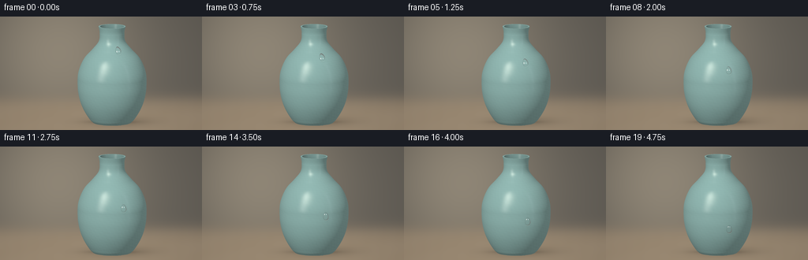
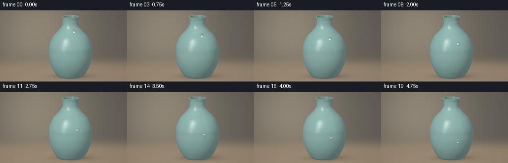
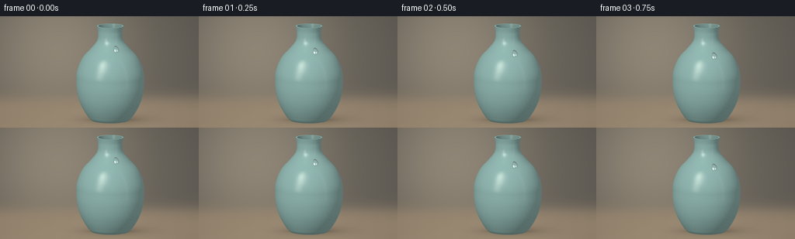

CODING AGENTS AS PIXEL WORLD MODELS
traex/GPT-6.1-Sol · phygen_039
点击播放 · 原生 RGB 像素
逐轮保存的候选
回放视频、检查图与代码变化。
每份候选均可单独播放。实际图片检查记录在下方工具轨迹中。
候选 01播放与检查图
点击播放 · 原生 RGB 像素

展开代码变化
--- 上一保存版本
+++ 本次保存版本
@@ -0,0 +1,267 @@
+"""Procedural studio shot: glazed ceramic and a sliding, refractive water drop.
+
+Only numpy/Pillow are used. Geometry and light transport are evaluated here;
+there are no external assets or rendering packages.
+"""
+from pathlib import Path
+import json
+import numpy as np
+from PIL import Image
+import artifact_io
+
+ROOT = Path(__file__).resolve().parent
+SPEC = json.loads((ROOT / 'task_spec.json').read_text())
+W, H, SS = SPEC['width'], SPEC['height'], 4
+WW, HH = W * SS, H * SS
+
+
+def unit(a):
+ return a / np.maximum(np.linalg.norm(a, axis=-1, keepdims=True), 1e-9)
+
+
+# Monotone Hermite interpolation makes a smooth, hand-thrown vessel profile.
+ys = np.array([0., .055, .16, .48, .92, 1.32, 1.66, 1.96, 2.20, 2.42, 2.68, 2.88])
+rs = np.array([.56, .62, .70, .88, 1.00, 1.015, .945, .79, .57, .40, .365, .40])
+slopes = np.gradient(rs, ys)
+slopes[0], slopes[-1] = .7, .23
+for i in range(1, len(ys)-1):
+ if (rs[i]-rs[i-1])*(rs[i+1]-rs[i]) <= 0:
+ slopes[i] = 0
+
+
+def profile(y, derivative=False):
+ k = np.clip(np.searchsorted(ys, y)-1, 0, len(ys)-2)
+ d = ys[k+1]-ys[k]
+ t = np.clip((y-ys[k])/d, 0, 1)
+ a, b, c, e = rs[k], rs[k+1], slopes[k]*d, slopes[k+1]*d
+ if derivative:
+ return ((6*t*t-6*t)*a + (-6*t*t+6*t)*b + (3*t*t-4*t+1)*c + (3*t*t-2*t)*e)/d
+ return (2*t**3-3*t*t+1)*a + (-2*t**3+3*t*t)*b + (t**3-2*t*t+t)*c + (t**3-t*t)*e
+
+
+eye = np.array([0., 2.98, 8.4])
+target = np.array([0., 1.45, 0.])
+forward = unit(target-eye)
+right = np.array([1., 0., 0.])
+up = unit(np.cross(right, forward))
+scale = 43.0 # final pixels / world unit
+cx, cy = 142., 73.
+X, Y = np.meshgrid((np.arange(WW)+.5)/SS, (np.arange(HH)+.5)/SS)
+origins = eye + right[None,None,:]*((X-cx)/scale)[...,None] + up[None,None,:]*((cy-Y)/scale)[...,None]
+view = -forward
+
+
+def project(p):
+ q = np.asarray(p)-eye
+ return np.stack([cx+scale*(q@right), cy-scale*(q@up)], axis=-1)
+
+
+def environment(d, roughness=0.):
+ """Warm studio surround with two photographic rectangular softboxes."""
+ sky = np.clip(d[...,1]*.5+.5, 0, 1)
+ col = np.array([.12,.105,.088]) + sky[...,None]*np.array([.14,.16,.18])
+ # Angular softbox rectangles, softly edged for the ceramic clearcoat.
+ az = np.arctan2(d[...,0], d[...,2])
+ el = np.arcsin(np.clip(d[...,1], -1, 1))
+ def rectangle(a, e, aw, eh, soft):
+ u = (np.abs(az-a)-aw)/soft
+ v = (np.abs(el-e)-eh)/soft
+ return 1/(1+np.exp(np.clip(u,-50,50))) / (1+np.exp(np.clip(v,-50,50)))
+ key = rectangle(-.66, .49, .19, .49, .017+roughness)
+ fill = rectangle(1.03, .31, .045, .53, .02+roughness)
+ col += key[...,None]*np.array([2.7,2.64,2.42])
+ col += fill[...,None]*np.array([.65,.78,.86])
+ return col
+
+
+def body_intersection(inset):
+ # Solve the first surface crossing by a bounded scan then bisection.
+ def field(t):
+ p = origins + t[...,None]*forward if np.ndim(t) else origins+t*forward
+ r = profile(p[...,1])-inset
+ return p[...,0]**2+p[...,2]**2-r*r, p[...,1]
+ result = np.full((HH,WW), np.inf)
+ prev_t = 6.45
+ prev_f, prev_y = field(prev_t)
+ for t in np.linspace(6.49, 10.25, 100):
+ f, y = field(t)
+ crossed = (f*prev_f<=0) & (y>0.07 if inset else y>0) & (y<2.88) & np.isinf(result)
+ if crossed.any():
+ lo = np.full((HH,WW), prev_t)
+ hi = np.full((HH,WW), t)
+ flo = prev_f.copy()
+ for _ in range(13):
+ mid = (lo+hi)*.5
+ fm, _ = field(mid)
+ left = flo*fm<=0
+ hi = np.where(left, mid, hi)
+ lo = np.where(left, lo, mid)
+ flo = np.where(left, flo, fm)
+ hit = (lo+hi)*.5
+ py = origins[...,1]+hit*forward[1]
+ crossed &= (py>(.07 if inset else 0)) & (py<2.88)
+ result[crossed] = hit[crossed]
+ prev_t, prev_f, prev_y = t, f, y
+ return result
+
+
+def make_scene():
+ # Defocused plaster background, natural warm tabletop, no distracting props.
+ vignette = ((X-129)/190)**2+((Y-67)/130)**2
+ illumination = np.exp(-((X-68)/98)**2-((Y-38)/112)**2)
+ bg = np.zeros((HH,WW,3), np.float64)
+ bg[:] = [.125,.113,.094]
+ bg += illumination[...,None]*np.array([.16,.133,.093])
+ bg *= (1-.25*np.clip(vignette,0,1))[...,None]
+ table = 1/(1+np.exp(-(Y-106)/5))
+ tablecolor = np.array([.235,.18,.123]) + np.exp(-((X-112)/160)**2)[...,None]*np.array([.09,.07,.045])
+ bg = bg*(1-table[...,None])+tablecolor*table[...,None]
+ # Extremely soft grain and broad contact shadow give scale and grounding.
+ grain = .002*(np.sin(X*.045+Y*.22)+.4*np.sin(X*.31+Y*.025))
+ bg += (grain*table)[...,None]
+ foot = project(np.array([0,0,0]))
+ shadow = .34*np.exp(-((X-foot[0]-7)/43)**2-((Y-foot[1]+1)/6.1)**2)
+ shadow += .35*np.exp(-((X-foot[0])/25)**2-((Y-foot[1]+.5)/1.7)**2)
+ bg *= (1-np.clip(shadow,0,.65))[...,None]
+
+ outer = body_intersection(0.)
+ inner = body_intersection(.048)
+ t_top = (2.88-origins[...,1])/forward[1]
+ p_top = origins+t_top[...,None]*forward
+ radius = np.linalg.norm(p_top[...,[0,2]], axis=-1)
+ rim = np.where((radius<=.4)&(radius>=.352),t_top,np.inf)
+ t_floor = (.07-origins[...,1])/forward[1]
+ p_floor = origins+t_floor[...,None]*forward
+ floor = np.where(np.linalg.norm(p_floor[...,[0,2]],axis=-1)<profile(.07)-.048,t_floor,np.inf)
+ stack = np.stack([outer,inner,rim,floor],axis=-1)
+ which = np.argmin(stack,axis=-1)
+ t = np.min(stack,axis=-1)
+ valid = np.isfinite(t)
+ p = origins+np.where(valid,t,8.4)[...,None]*forward
+ radial = np.sqrt(p[...,0]**2+p[...,2]**2)
+ n = unit(np.stack([p[...,0]/np.maximum(radial,1e-6), -profile(p[...,1],True),p[...,2]/np.maximum(radial,1e-6)],axis=-1))
+ n = np.where((which==1)[...,None],-n,n)
+ n = np.where(((which==2)|(which==3))[...,None],np.array([0.,1.,0.]),n)
+ light = unit(np.array([-3.,5.,5.]))
+ light2 = unit(np.array([4.,2.5,1.5]))
+ nl = np.maximum(n@light,0)
+ nl2 = np.maximum(n@light2,0)
+ nv = np.maximum(n@view,0)
+ diffuse = .24+.61*nl+.10*nl2
+ theta = np.arctan2(p[...,0],p[...,2])
+ mottling = .006*np.sin(theta*32+p[...,1]*45)*np.sin(p[...,1]*17-theta*13)
+ mottling += .004*np.sin(p[...,1]*109+np.sin(theta*6)*.9)
+ ceramic = np.array([.335,.565,.527])
+ rgb = ceramic[None,None,:]*(diffuse+mottling)[...,None]
+ # Clear glaze preserves a large softbox reflection over a diffuse ceramic body.
+ reflection = 2*nv[...,None]*n-view
+ fresnel = .045+.15*(1-nv)**4
+ rgb += fresnel[...,None]*environment(reflection,.058)
+ half = unit(light+view)
+ rgb += (np.maximum(n@half,0)**95)[...,None]*np.array([.19,.19,.16])
+ # Small edge darkening and a deeper, naturally unlit mouth.
+ rgb *= (.86+.14*nv)[...,None]
+ cavity = which==1
+ cavity_depth = np.clip((2.88-p[...,1])/.8,0,1)
+ rgb *= np.where(cavity, .67-.38*cavity_depth, 1)[...,None]
+ rgb = np.where((which==3)[...,None],rgb*.25,rgb)
+ bg[valid] = rgb[valid]
+ return bg, valid
+
+
+def bilinear(image, x, y):
+ xx = np.clip(x*SS-.5,0,WW-1.001)
+ yy = np.clip(y*SS-.5,0,HH-1.001)
+ ix, iy = xx.astype(int), yy.astype(int)
+ dx, dy = (xx-ix)[...,None], (yy-iy)[...,None]
+ return (image[iy,ix]*(1-dx)*(1-dy)+image[iy,ix+1]*dx*(1-dy)+image[iy+1,ix]*(1-dx)*dy+image[iy+1,ix+1]*dx*dy)
+
+
+def drop_location(t):
+ y = 2.225-1.345*(.18*t+.82*t**1.13)
+ angle = .31+.023*np.sin(t*2.6)
+ r = profile(y)
+ p = np.array([r*np.sin(angle),y,r*np.cos(angle)])
+ normal = unit(np.array([np.sin(angle),-profile(y,True),np.cos(angle)]))
+ tangent = unit(np.array([-profile(y,True)*np.sin(angle),-1.,-profile(y,True)*np.cos(angle)]))
+ horizontal = np.array([np.cos(angle),0.,-np.sin(angle)])
+ return p,normal,tangent,horizontal
+
+
+def draw_drop(base, t, vase_mask):
+ scene = base.copy()
+ p,n,tangent,horizontal = drop_location(t)
+ center = project(p+n*.045)
+ td = np.array([tangent@right,-tangent@up])
+ td /= np.linalg.norm(td)
+ hd = np.array([td[1],-td[0]])
+ # A narrow, faint wetted trace clings to the actual curved ceramic surface.
+ if t>0:
+ for tt in np.linspace(max(0,t-.25),t,34):
+ pt,nn,_,_ = drop_location(tt)
+ xy = project(pt+nn*.003)
+ age = t-tt
+ a = .022*np.exp(-age*5)
+ line = np.exp(-((X-xy[0])**2+(Y-xy[1])**2)/.18)*a*vase_mask
+ scene *= 1-line[...,None]
+ dx,dy = X-center[0],Y-center[1]
+ u = (dx*hd[0]+dy*hd[1])/3.45
+ v = (dx*td[0]+dy*td[1])/5.1
+ # Surface tension makes a tapered trailing end, and a round lower lobe.
+ breadth = 1+.22*v-.055*v*v
+ u = u/np.maximum(breadth,.5)
+ rr = u*u+v*v
+ mask = rr<1
+ z = np.sqrt(np.maximum(1-rr,0))
+ water_normal = unit(n[None,None,:]*z[...,None]+horizontal[None,None,:]*(u*.92)[...,None]+tangent[None,None,:]*(v*.87)[...,None])
+ nv = np.clip(water_normal@view,0,1)
+ # Contact shadow displaced toward the unlit side, restricted to the vase.
+ shadow_rr = ((dx-.7)*hd[0]+(dy-1)*hd[1])**2/3.8**2 + ((dx-.7)*td[0]+(dy-1)*td[1])**2/5.45**2
+ shadow = .15*np.exp(-np.maximum(shadow_rr-1,0)*13)*(shadow_rr>1)*vase_mask
+ scene *= (1-shadow)[...,None]
+ # Short focus of the water lens on the glaze underneath; clear transmission.
+ refrx = center[0]+(X-center[0])*(.63+.19*rr)
+ refry = center[1]+(Y-center[1])*(.63+.19*rr)+.4*z
+ transmitted = bilinear(base,refrx,refry)
+ transmitted *= (.88+.13*z)[...,None]
+ reflected = environment(2*nv[...,None]*water_normal-view,.012)
+ fresnel = .0204+.9796*(1-nv)**5
+ # At the nearly grazing contact line, water refracts dark studio surround.
+ rgb = transmitted*(1-fresnel[...,None])+reflected*fresnel[...,None]
+ edge = np.exp(-((np.sqrt(rr)-.967)/.027)**2)
+ rgb *= (1-.25*edge)[...,None]
+ # Tightly focused, real specular returns from the large photographic key.
+ light = unit(np.array([-3.,5.,5.]))
+ half = unit(light+view)
+ spec = np.maximum(water_normal@half,0)**180
+ rgb += spec[...,None]*np.array([2.6,2.55,2.35])
+ # A small second reflected window is responsible for the lower glint.
+ h2 = unit(unit(np.array([4.,2.5,1.5]))+view)
+ rgb += (np.maximum(water_normal@h2,0)**230)[...,None]*np.array([.80,1.0,1.05])
+ # Light concentrated just outside the lower meniscus, on the ceramic.
+ caustic = np.exp(-((np.sqrt(rr)-1.05)/.055)**2)*np.maximum(v,0)**4
+ scene += (caustic*.075*vase_mask)[...,None]*np.array([.80,1.0,.86])
+ scene[mask & vase_mask] = rgb[mask & vase_mask]
+ return scene
+
+
+def main():
+ base, vase_mask = make_scene()
+ frames = []
+ for i in range(SPEC['frames']):
+ t = i/(SPEC['frames']-1)
+ linear = draw_drop(base,t,vase_mask)
+ # Filmic roll-off keeps the wet glints brilliant without broad clipping.
+ linear = np.maximum(linear,0)
+ linear = np.where(linear>.8, .8+.2*(1-np.exp(-(linear-.8)/.2)),linear)
+ srgb = np.clip(linear,0,1)**(1/2.2)
+ image = Image.fromarray(np.uint8(np.clip(srgb*255+.5,0,255)))
+ image = image.resize((W,H),Image.Resampling.LANCZOS)
+ frames.append(np.asarray(image))
+ print(f'Frame {i+1}/{SPEC["frames"]}',flush=True)
+ artifact_io.save(np.stack(frames),ROOT)
+ print('Saved RGB frames, pixels.npz, inspection sheets, and index.html.',flush=True)
+
+
+if __name__ == '__main__':
+ main()
候选 02播放与检查图
点击播放 · 原生 RGB 像素


展开代码变化
--- 上一保存版本
+++ 本次保存版本
@@ -233,11 +233,11 @@
# Tightly focused, real specular returns from the large photographic key.
light = unit(np.array([-3.,5.,5.]))
half = unit(light+view)
- spec = np.maximum(water_normal@half,0)**180
- rgb += spec[...,None]*np.array([2.6,2.55,2.35])
+ spec = np.maximum(water_normal@half,0)**60
+ rgb += spec[...,None]*np.array([3.3,3.23,3.02])
# A small second reflected window is responsible for the lower glint.
h2 = unit(unit(np.array([4.,2.5,1.5]))+view)
- rgb += (np.maximum(water_normal@h2,0)**230)[...,None]*np.array([.80,1.0,1.05])
+ rgb += (np.maximum(water_normal@h2,0)**105)[...,None]*np.array([.80,1.0,1.05])
# Light concentrated just outside the lower meniscus, on the ceramic.
caustic = np.exp(-((np.sqrt(rr)-1.05)/.055)**2)*np.maximum(v,0)**4
scene += (caustic*.075*vase_mask)[...,None]*np.array([.80,1.0,.86])
可观测工具轨迹
实际执行的命令与返回图片。
命令 1exit 0
/bin/bash -lc 'ls -la && cat prompt.txt && cat GENERATION_RULES.md && cat task_spec.json'
命令 2exit 0
/bin/bash -lc 'cat artifact_io.py && cat player_template.html'
命令 3exit 0
/bin/bash -lc "python - <<'PY'
import numpy,PIL
print('numpy',numpy.__version__)
PY"命令 4exit 0
/bin/bash -lc 'python generate.py'
命令 5exit 0
/bin/bash -lc 'ps -o pid,etime,%cpu,rss,args -C python | tail -4'
命令 6exit 0
/bin/bash -lc "python - <<'PY'
from pathlib import Path
import numpy as np
from PIL import Image
import generate
p=np.load('pixels.npz')['pixels']
print('Packed RGB tensor:',p.shape,p.dtype)
a=np.stack([np.asarray(Image.open(f'frames/{i:02d}.png')) for i in range(20)])
print('Frames:',a.shape,a.dtype,'range:',a.min(),a.max())
print('Consecutive frame change totals:',np.sum(np.any(a[1:]"'!=a[:-1],axis=-1),axis=(1,2)).tolist())
for t in [0,.5,1]:
pos,n,_,_=generate.drop_location(t)
xy=generate.project(pos+n*.045)
x,y=np.round(xy).astype(int)
print('"'Droplet',t,'center:',xy.round(2),'nearby RGB min/max:',a[int(t*19),y-6:y+7,x-5:x+6].min(axis=(0,1)),a[int(t*19),y-6:y+7,x-5:x+6].max(axis=(0,1)))
print('Artifacts:',[(f,Path(f).stat().st_size) for f in ['generate.py','pixels.npz','index.html','inspection.png','transition_check.png']])
PY"命令 7exit 0
/bin/bash -lc "python - <<'PY' import generate as g import numpy as np for t in [0,.5,1]: p,n,td,h=g.drop_location(t) center=g.project(p+n*.045) tangent=np.array([td@g.right,-td@g.up]);tangent/=np.linalg.norm(tangent); horiz=np.array([tangent[1],-tangent[0]]) dx,dy=g.X-center[0],g.Y-center[1] u=(dx*horiz[0]+dy*horiz[1])/3.45;v=(dx*tangent[0]+dy*tangent[1])/5.1 u/=np.maximum(1+.22*v-.055*v*v,.5) rr=u*u+v*v;z=np.sqrt(np.maximum(1-rr,0));N=g.unit(n*z[...,None]+h*(u*.92)[...,None]+td*(v*.87)[...,None]) half=g.unit(g.unit(np.array([-3.,5.,5.]))+g.view) spec=np.maximum(N@half,0)**180 print(t,spec[rr<1].max(),np.unravel_index(np.argmax(spec*(rr<1)),spec.shape),center) PY"
命令 8exit 0
/bin/bash -lc "python - <<'PY'
import numpy as np
from PIL import Image
for i in [0,5,10,15,19]:
a=np.asarray(Image.open(f'frames/{i:02d}.png'))
diff=np.max(np.abs(a.astype(int)-np.asarray(Image.open(f'frames/{0 if i else 19:02d}.png')).astype(int)),axis=-1)
yy,xx=np.where(diff>15)
print(i,'difference box', (xx.min(),yy.min(),xx.max(),yy.max()),'largest-delta pixel',np.unravel_index(np.argmax(diff),diff.shape))
for y in range(99,108):
if i==19: print(y,a[y,151:161].max(axis=0), a[y,151:161].max())
PY"命令 9exit 0
/bin/bash -lc 'python generate.py'
命令 10exit 0
/bin/bash -lc "python - <<'PY'
from pathlib import Path
from PIL import Image
import numpy as np
frames=np.stack([np.asarray(Image.open(f'frames/{i:02d}.png')) for i in range(20)])
assert frames.shape==(20,144,256,3) and frames.dtype==np.uint8
pixels=np.load('pixels.npz')['pixels']
packed=(frames[...,0].astype('uint32')<<16)|(frames[...,1].astype('uint32')<<8)|frames[...,2]
assert np.array_equal(pixels,packed.transpose(1,2,0))
for f in ['index.html','inspection.png','transition_check.png','generate.py']: assert Path(f).is_file()
for i,x,y in [(0,150,43),(9,156,72),(19,156,105)]: print('Droplet peak RGB',i,frames[i,y-6:y+7,x-5:x+6].max())
print('Validated: 20 RGB frames, 256x144, 4 fps, 5 seconds; all required artifacts exist.')
PY"保存候选 2 份；完成命令 10 次；可验证图片返回 0 张。原始 API 响应与完整日志保留在本地。